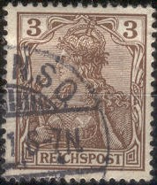
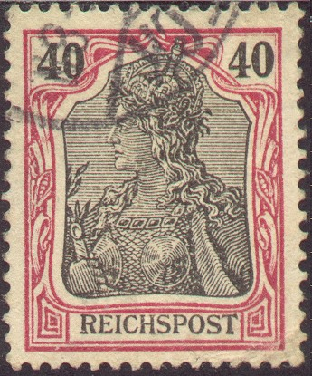
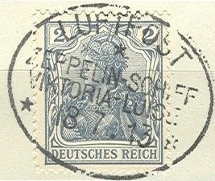
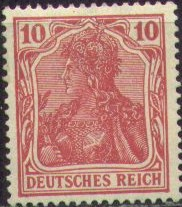
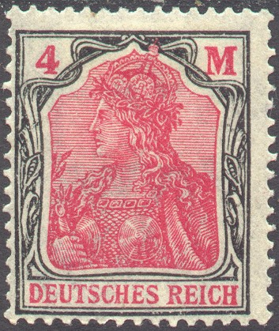
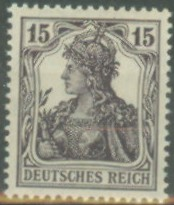
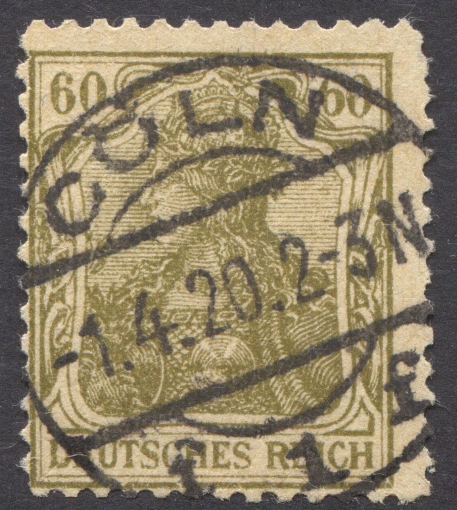
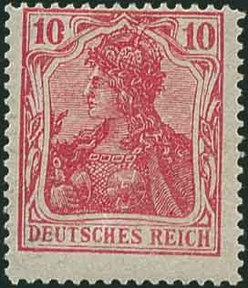
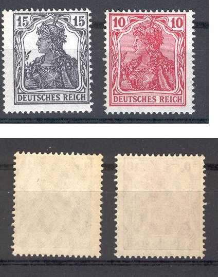

Return To Catalogue - Germany Overview - Germany 1889-1899 issues - 1900-1920 other issues
Note: on my website many of the
pictures can not be seen! They are of course present in the
catalogue;
contact me if you want to purchase it.
Inscription 'REICHSPOST'


2 p grey 3 p brown 5 p green 10 p red 20 p blue 25 p orange and black on yellow 30 p orange and black 40 p red and black 50 p violet and black 80 p red and black on red Surcharged and bisected
(Image obtained from a Hans Grobe auction:
http://www.hans-grobe.de/katalog/00001-00130.html)
'3 PF' (violet) on half of 5 c green (1901)
This surcharged and bisected stamp was only used on the warship 'Vineta', it is commonly known as 'Vineta-provisorium'. They were produced because of the need of 3 p stamps. The status of this stamp is doubtful, only 600 stamps were overprinted. It seems that the man responsable for making these provisional stamps, made later forgeries using the handstamp and the original backdated shipcancels.
This surcharge has been forged, example:
(Overprint in wrong colour; black)
(Other forgery)
Inscription 'DEUTSCHES REICH' (with lines behind Germania) (1902)



2 p grey 3 p brown 5 p green 5 p brown (1920) 10 p red 10 p orange (1920) 20 p blue 20 p green (1920) 25 p orange and black on yellow 30 p orange and black 30 p blue (1920) 40 p red and black 40 p red (1920) 50 p violet and black 50 p lilac (1920) 60 p lilac (1905) 60 p olive (1920) 75 p green and black (1919) 75 p lilac (1920) 80 p red and black on red 80 p blue 1 M violet and green (1920) 1 1/4 M red and lilac (1920) 2 M red and blue (1920) 4 M black and red (1920) Surcharged (1921)
'* 1,60 M *' on 5 p brown '3 M 3' on 1 1/4 M red and lilac '* 5 Mark *' (green) on 75 p lilac '10 M 10' on 75 p lilac Overprinted 'Fur Kriegs beschadigte' in fancy letters and surcharged (1919)
10 + 5 p red 15 + 5 p violet
A misprint exists of the 3 pf brown, the so-called 'F-variety': 'DFUTSCHES' instead of 'DEUTSCHES' (one error can be found on every sheet of stamps):

('DE' and 'DF', zoom-in)
I've seen a forged 'F' variety, in which the bottom part of the 'E' was scratched away.
Inscription 'DEUTSCHES REICH', Germania on white background

2 p olive (1918) 2 1/2 p grey (1916) 7 1/2 p orange (1916) 15 p brown (1916) 15 p violet (1917) 15 p lilac (1920) 35 p brown (1919)
These stamps with overprint in 'PARA', 'PIASTER', or 'CENTIMES' were used in the German post offices in Turkey.
These stamps surcharged with '5' or '10' were used in Poland:
These overprints are rare and have been forged, examples:
(Forged inverted overprints)
For the specialist: the 'REICHSPOST' issues are all without watermark. The 'DEUTSCHES REICH' issues were first issued without watermark, but later reissued in 1905 with watermark lozenges, example:
(Lozenges watermark)
The 75 p lilac and 1 1/4 M also exist with watermark 'Wafles' (issued 1921).
A distinction can be made between the first printings of the 30 c blue, 75 c lilac and 80 c blue and the later printings of these stamps. The first printings of these stamps were done in two seperate parts, the frame seperately and the center, name and value seperately. A small shift can be seen between those two parts. Later, the frame and the rest was printed in only one operation (these are the ones commonly encountered).
(Example of a stamp printed in two seperate parts, not that
'DEUTSCHES REICH' is not placed symmetrically in the containing
label)
Value of the stamps |
|||
vc = very common c = common * = not so common ** = uncommon |
*** = very uncommon R = rare RR = very rare RRR = extremely rare |
||
| Value | Unused | Used | Remarks |
'Reichspost', no Watermark (1900) |
|||
| 2 p | c | c | |
| 3 p | c | vc | |
| 5 p | c | vc | |
| '3 pf' on half of 5 p | RRR | RRR | Vineta provisional issue; dubious issue |
| 10 p | c | vc | |
| 20 p | * | vc | |
| 25 p | * | c | |
| 30 p | * | c | |
| 40 p | * | c | |
| 50 p | ** | c | |
| 80 p | *** | c | |
| 'Deutsches Reich', no Watermark (1902) | |||
| 2 p grey | c | vc | |
| 3 p | c | vc | variety 'DFUTSCHES': ** |
| 5 p green | c | vc | |
| 10 p red | c | vc | |
| 20 p blue | * | vc | |
| 25 p | * | c | |
| 30 p orange and black | ** | c | |
| 40 p red and black | ** | c | |
| 50 p violet and black | *** | c | |
| 80 p black and red on red | *** | c | |
| 'Deutsches Reich', Watermark 'Lozenges (Rauten)', (1905) | |||
| 2 p | * | c | lined background |
| 2 p olive | c | c | white background |
| 2 1/2 p | c | c | white background |
| 3 p | c | vc | |
| 5 p green | c | vc | |
| 5 p brown | vc | vc | |
| 7 1/2 p | c | vc | white background |
| 10 p red | c | vc | |
| 10 p orange | vc | vc | |
| 15 p brown | * | vc | white background |
| 15 p violet | c | vc | white background |
| 15 p lilac | vc | vc | white background |
| 20 p blue | c | vc | |
| 20 p green | vc | vc | |
| 25 p | c | vc | |
| 30 p orange and black | c | vc | |
| 30 p blue | vc | vc | |
| 35 p | vc | vc | white background |
| 40 p red and black | c | c | |
| 40 p red | c | vc | |
| 50 p violet and black | * | vc | |
| 50 p lilac | c | c | |
| 60 p lilac | * | vc | |
| 60 p olive | vc | vc | |
| 75 p green and black | c | vc | |
| 75 p lilac | c | c | |
| 80 p red and black on red | c | c | |
| 80 p blue | vc | vc | |
| 1 M | vc | vc | |
| 1 1/4 M | vc | vc | |
| 2 M | c | vc | |
| 4 M | c | c | Exists with fiscal 'Flower' watermark: R |
| 'Deutsches Reich', watermark 'Wafles (Waffeln)', (1922) | |||
| 75 p lilac | c | c | |
| 1 1/4 M | c | c | |
| 'Deutsches Reich', watermark 'Quatrefoils (Vierpass)', (1920) | |||
| 1 1/4 M | RR | R | Printed erroneously on paper with fiscal watermark 'Quatrefoils' |
| Surcharged (1921) | |||
| 1.60 M on 5 p brown | vc | vc | Watermark 'Lozenges' |
| 3 M on 1 1/4 M | vc | c | Watermark 'Lozenges' |
| 5 M on 75 p lilac | vc | c | Watermark 'Lozenges' |
| 10 M on 75 p lilac | c | c | Watermark 'Lozenges' |
| Overprinted 'fur Kriegs = beschadigte' (war charity, 1919) | |||
| 10 p + 5 p | c | c | |
| 15 p + 5 p | c | c | |
I have seen parts of booklets with two Germania stamps or more of different value printed together. I have seen 7 1/2 p and 15 p violet. I have also seen a block of six stamps, four 7 1/2 p stamps and the bottom center and bottom right stamp 5 p green. Also a block of 6 stamps, two 10 c red stamps at the left top and four 5 c green stamps. Also a block of 6 stamps consisiting of four 15 c violet stamps and two 10 c red stamps (the two 10 c red stamps at the left bottom part). From the same source tete-beche pairs can be found, for example the 10 c orange or the 40 c red. I've also seen a 40 c red Germania stamp with a 30 c green 1921 stamp attached to the bottom (also from booklets). Also three stamps, a 7 1/2 p with a 2 1/2 p below it and another 7 1/2 p below the 2 1/2 p.
Forgery (to deceive the postal authorities); so-called Cologne forgery, the perforation is wrong (13 instead of 14 x 14 1/2)and there are some differences is the design (for example the '6' at the right hand side):

(Postal forgery known as Cologne forgery or 'Kölner
Postfälschung')
A second Cologne forgery exists of the 5 p; According to http://www.jaeschke-lantelme.com/Veroffentlichungen/Postfalschungen/Colner_PFa/colner_pfa.html these forgeries were made from a 5 p postcard by the forger Andreas Thomas. He carefully cut out the outer ornaments as well as the inner image. He then passed both cuts to two different plate manufacturers, not telling them his true intensions. From these plates he printed his forgeries. The stamps were put in circulation by two accomplices: the sisters Anna and Sibilla Uhlenbroch. The scheme was discovered very soon and only a few of these postal forgeries can have passed through the post. The design is very bad (see picture):
Second Cologne forgery of the 5 p of early 1916; black and white
picture obtained from
http://www.jaeschke-lantelme.com/Veroffentlichungen/Postfalschungen/Colner_PFa/colner_pfa.html
This postal forgery of the 10 p 'Reichpost' stamp is slightly
smaller than the genuine stamps, the woman has a 'smile', the
second 'S' of 'REICHPOST' is different and the top of the '1' has
a larger serif.
So-called Hellerie forgeries (made by the forger Hellerie). The following information was obtained from this website: http://www.museumsstiftung.de/stiftung/d1xx_sammlungen.asp?dbid=10&kattype=B&kat=100&page=11. These forgeries exist of the values 25 p, 40 p and 50 p of the 'Deutsches Reich' type and were discovered in 1903. The forger used uncancelled official stamps from which he removed the center piece. He then pasted the central part from previously used stamps. These forgeries were mainly used on parcels.
Hellerie forgery, image obtained from the above mentioned website
Another postal forgery is known as the Chemnitz forgery (10 p red, 'Deutsches Reich', no watermark):

Certified genuine Chemnitz postal forgeries or 'Chemnitzer
Postfälschung'
Usually these Chemnitz postal forgeries are perforated. The above imperforate forgery probably originated from the confiscated unfinished sheets. These forgeries were made by Shulz and Meerstein in 1902. The hair curls at the back of the head all have white centers. The lettering of 'DEUTSCHES REICH' is quite poorly done. This forgery is described in 'The Postal Forgeries of the World' by H.G.L.Fletcher.
Left: Postal forgeries of the 10 M on 75 p, stamp and cancel
genuine, overprint forged. The forged overprint is slightly
different from the genuine overprint and is slanting. I've seen
other postal forgeries of this type, all used in Frankfurt am
Main in August 1922. Right a genuine stamp with genuine
overprint.
Postal forgery of the 1.60 M on 5 p
Postal forgeries exist of the 1.60 M on 5 p and 10 M on 75 p, the basic stamp is genuine, the overprints are forged.
(A bogus overprint)
The above overprint (of a man with a sword and flag?) on Germania stamps is bogus. This overprint exists in black, red, silver or gold. It seems to have been made in Aachen. Furthermore, stamps with overprint 'Freistaat Sachsen' are also bogus (sorry, no picture available yet).
So-called 'spy-fakes', made by the British during World War I:

The 'Spy-fakes' are printed on paper whiter than the genuine paper (according to 'Fakes & Forgeries of Germany & Colonies' by the Germany Philatelic Society Inc.). The watermark is also imitated, but is slightly smaller and differently spaced (according to the same source). The design is copied very accurately. These forgeries are not very well centered (compared to genuine German stamps). The easiest way to recognize them is the perforation: the number of holes in the horizontal perforation should be 14, in the spy-fakes it is 15! There are very microscopic differences in the design as well, for example, the 'H' of 'DEUTSCHES' is slightly different. These forgeries have probably never been used.
Sheet from Walter Behrens showing these forgeries and the real
stamps. Also explaining the distinguishing characteristics.
These stamps exist with advertisement labels attached.
(A genuine advertisement label 'Apfelwein Heinr. Besser
St.Johann')
However, these have also been forged. Next a total forgery (stamp, label, cancel) made by Peter Winter in the 1980's:
(Forgery of a 'Photo-Papiere Satrap' label)
Peter Winter also made forgeries of other labels, I have seen: 'Aquadent Ferd. Jacob', 'Appetitanregend Lecin' and 'Gewerktschaft Quint' (all attached to a 10 p stamp). Note, that the perforation does not 'match' in the corners in these forgeries. I've even seen them on postcards with forged oval cancel 'CASSEL - BEBRA BAHNPOST ZUG 242 31 1 17' or 'KIEL 19 8 13 10-11 V. 1' often adressed to 'Gebr. Röchling Kohlengrosshandlung München 2 Brieffach':
Forged postcard, reduced size
10 p orange with private advertisement overprint 'Der Kurort Bad
Elster ist auch im Winter geoffnet': 'the resort Bad Elster is
also opened during the winter'.
Stamps overprinted with 'CIHS' in a small circle were issued for Upper Silesia.
Postal stationary in a similar design as the
stamps shown above exists. I have seen:
with 'REICHSPOST' inscription: 2 p grey, 5 p green, 30 p blue
with 'DEUTSCHES REICH' inscription with lined background: 2 p
grey, 5 p green, 10 p red and 30 p blue, 35 p blue (non-existing
as stamp); also a 2 p grey and 3 p brown printed together on one
document;
with 'DEUTSCHES REICH' inscription and white background: 7 1/2 p
orange,
Toy stamp, inscription 'KINDERPOST' 2 p grey, I have also seen 20
p blue in the Germania design and 3 p, 5 p and 10 p of the 1889
issue of this Kinderpost.
Two stamps overprinted 'Rep. Baden', both cancelled in Karlsruhe.
Probably a privately produced overprint
Essays in similar design, but with inscription 'REICHSDRUCKEREI'
{kind=link}
{kind=link}
{kind=link}